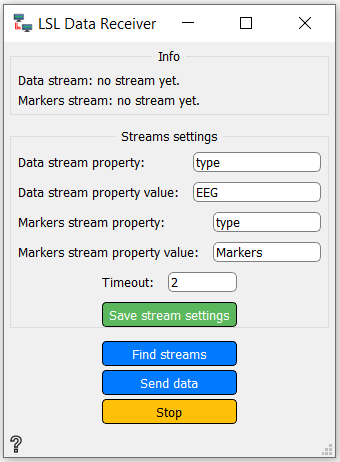
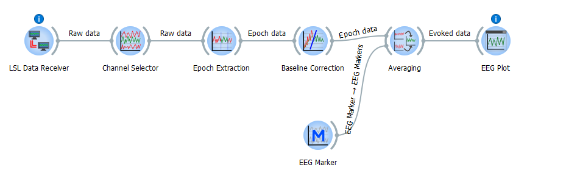

LSL Data Receiver
Receives EEG LSL data.
Inputs
- Online data streams
- Online markers stream
Outputs
Use

- Streams settings - settings for data and markers
- Timeout - Optionally a timeout of the operation, in seconds. If the timeout expires, less than the desired number of streams (possibly none) will be returned. (default FOREVER)
- Save stream settings button - saves the Streams settings changes
- Find streams button - Starts with findings streams with data and markers
- Send data button - Sends found data to workflow (as output Raw)
- Stop button - Stop data finding
Example
